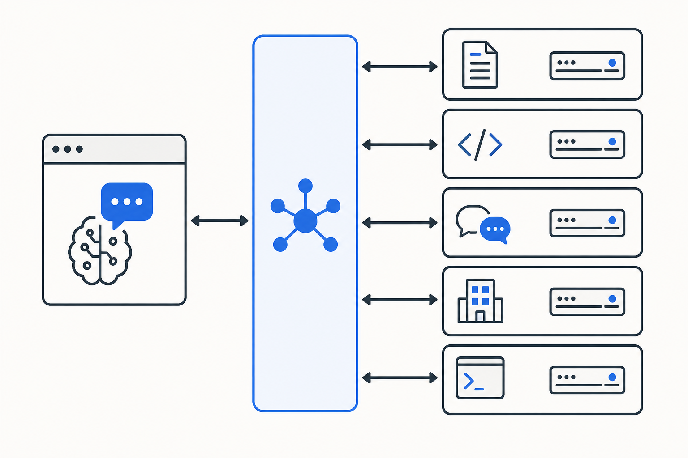
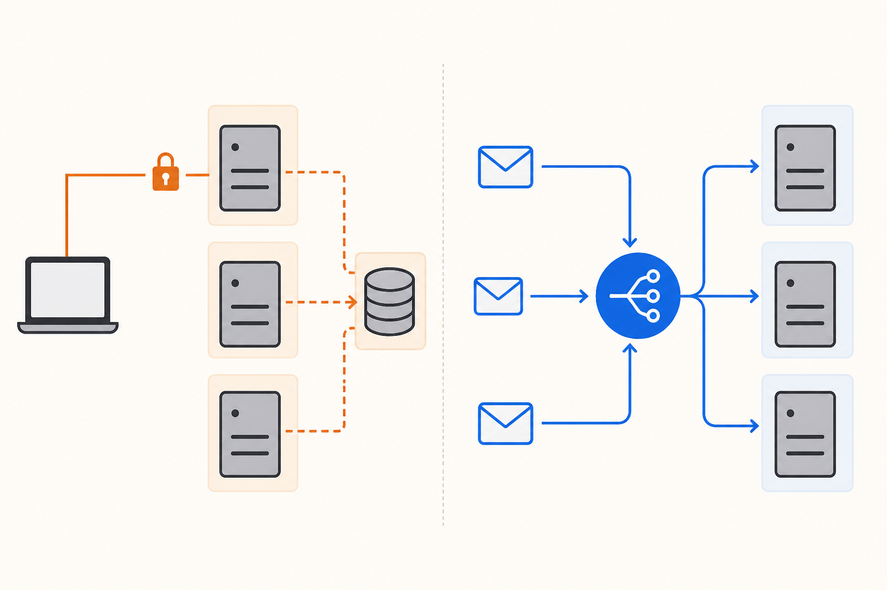
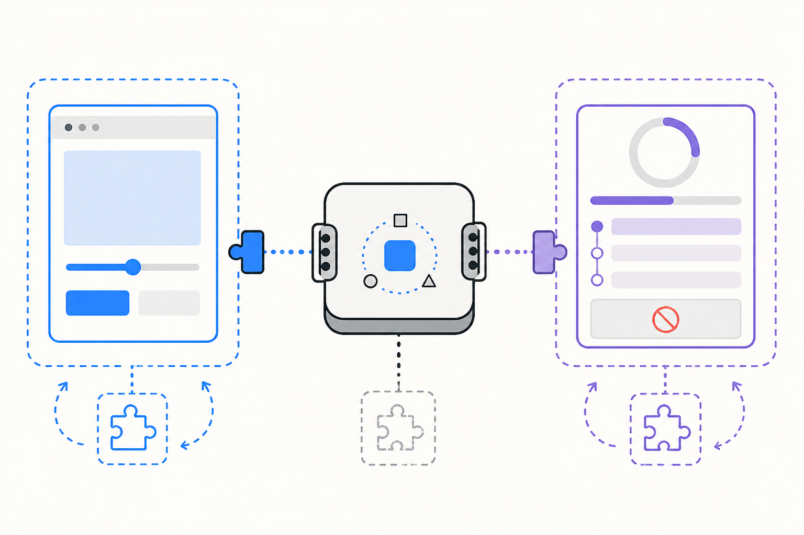
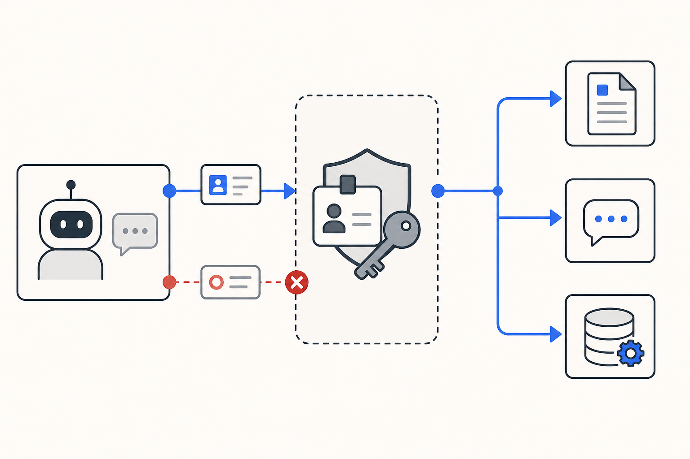

익숙하게 쓰던 기술의 안쪽을 들여다본 기록
쓰던 MCP의 구조를 뒤늦게 알게 됐다
Notion부터 사내 CLI까지 연결해온 공통 규격이 실제로 어떻게 운영되는지, 2026-07-28 규격의 변화를 따라가며 이해해봤다.
MCP를 꽤 많이 사용했지만 그 안의 연결 구조는 자세히 몰랐습니다. 새 규격의 변화를 따라가면서, 서로 다른 도구를 하나의 방식으로 다루게 해주는 공통 운영 기반을 처음 구체적으로 이해했어요.
최근 MCP 2026-07-28 규격의 릴리스 후보를 소개하는 글을 읽었습니다.
저는 MCP를 꽤 많이 사용해왔어요. Notion에서 문서를 찾고, GitHub의 이슈와 코드를 살펴보고, Slack의 대화를 읽습니다. 사내 프로그램이나 CLI를 MCP로 연결해 쓰기도 했고요.
AI가 대화 안에서 답만 만드는 것이 아니라, 직접 도구를 활용해 더 넓은 범위의 일에 영향을 줄 수 있게 해주는 공통 규격이라는 생각은 있었거든요. 다만 그 연결이 실제로 어떤 구조로 이루어지는지까지 알려고 하지는 않았습니다. 잘 작동하고 필요한 도구가 연결되면 그것으로 충분했으니까요.
이번 글도 원래는 새 규격에서 달라지는 내용을 설명하는 글입니다. MCP 입문 글은 아니고요. 그런데 이전 구조와 새로운 구조를 나란히 설명하는 내용을 따라가다 보니, 오히려 MCP가 어떻게 작동하는지를 처음 구체적으로 이해하게 됐어요.
릴리스 후보였던 규격은 이후 2026년 7월 28일 최종 공개됐습니다. 큰 변화들을 하나씩 따라가며 제가 새롭게 알게 된 내용을 정리해봤어요.
내가 사용하던 것은 도구가 아니라 공통된 연결 방식이었다
MCP는 AI 애플리케이션과 외부 도구나 데이터를 연결하는 프로토콜입니다.
아주 단순하게 보면 AI 애플리케이션이 호스트가 되고, 그 안의 MCP 클라이언트가 외부 MCP 서버와 대화해요. MCP 서버는 자신이 제공할 수 있는 도구, 리소스, 프롬프트 같은 기능을 공통된 형식으로 내놓습니다. 호스트는 그 형식을 이해하고 필요한 기능을 호출하고요.
Notion과 GitHub, Slack은 서로 전혀 다른 서비스죠. 사내 프로그램과 CLI까지 더하면 인증 방식도, 할 수 있는 일도 달라집니다. 이런 서비스를 AI 애플리케이션마다 매번 따로 연결해야 한다면 어떨까요? MCP는 바로 그 사이의 대화 방식을 맞춰줍니다.

이 구조를 알고 나니 MCP가, 조금 과장해서 말하면 하나의 공통 운영체제처럼 느껴졌어요.
물론 MCP 자체가 운영체제라는 뜻은 아닙니다. 다만 서로 다른 프로그램이 공통된 규칙 위에서 기능을 제공하고, 호스트가 그 기능을 발견해 실행하게 한다는 점에서 그런 인상을 받았거든요. 제가 각각의 서비스를 따로 쓰고 있다고 생각했던 순간에도, 그 아래에는 같은 요청과 응답의 규칙이 흐르고 있었던 셈이죠.
MCP는 도구를 하나로 합치는 기술이라기보다, 서로 다른 도구를 하나의 방식으로 다룰 수 있게 만드는 공통 운영 기반에 가까웠다.
이번 규격의 변화는 이 공통 기반을 실제 서비스에서 더 안정적으로 운영하는 방향으로 이어집니다.
가장 큰 변화는 세션을 없앤 것이다
이번 규격에서 가장 큰 변화는 MCP의 핵심이 상태 비저장 구조로 바뀌었다는 점입니다.
이전에는 클라이언트와 서버가 먼저 initialize 과정을 거쳐 연결을 만들었습니다. 서버가 세션 ID를 발급하면 이후 요청은 같은 ID를 계속 담아야 했고요. 서버를 여러 대 운영하려면 특정 사용자의 요청이 같은 서버로 향하게 하거나, 여러 서버가 세션 정보를 함께 볼 수 있는 저장소가 필요했죠.
새 규격에서는 이 초기 연결 과정과 프로토콜 수준의 세션이 사라졌습니다. 대신 각각의 요청이 필요한 정보를 스스로 담는 방식으로 바뀌었어요. 서버의 기능을 미리 확인하고 싶다면 server/discover를 선택적으로 호출할 수 있고요.
이제 하나의 요청은 어느 서버 인스턴스에 도착해도 처리될 수 있습니다. 일반적인 HTTP 서비스처럼 여러 서버에 요청을 나누기 쉬워지고, 특정 연결을 계속 유지하기 위한 운영 부담도 줄어드는 셈이죠.

그렇다면 ‘상태가 없다’는 말은 사용자의 작업 내용까지 기억하지 못한다는 뜻일까요? 그렇지는 않습니다. 사라진 것은 프로토콜이 뒤에서 관리하던 세션이에요. 장바구니나 브라우저 작업처럼 여러 호출에 걸쳐 상태가 필요하다면, 서버가 명시적인 식별자를 만들고 다음 도구 호출에서 그 값을 다시 전달하면 됩니다.
숨겨진 연결 상태 대신 모델도 볼 수 있는 명시적인 값으로 작업을 이어가는 방식입니다. MCP가 상태를 대신 관리하지 않을 뿐, 애플리케이션이 상태를 갖지 못하게 만드는 것은 아니거든요.
상태를 없애면서 상호작용 방식도 바뀌었다
세션과 열린 연결을 없애면 새로운 문제가 생깁니다. 도구를 실행하는 도중 서버가 사용자에게 확인을 요청해야 할 때는 어떻게 해야 할까요?
예를 들어 파일 세 개를 지우기 전에 사용자의 승인을 받아야 할 수 있어요. 이전에는 서버가 열린 연결을 통해 클라이언트에 다시 요청할 수 있었습니다. 새 규격은 MRTR(Multi Round-Trip Requests)이라는 방식으로 이 흐름을 바꿨고요.
서버는 작업을 계속하려면 입력이 필요하다는 결과와 질문을 돌려줍니다. 클라이언트는 사용자의 답을 받은 뒤 그 응답을 붙여 원래 요청을 다시 보내요. 한 연결을 계속 붙들고 있지 않아도 여러 차례의 확인과 대화를 이어갈 수 있는 구조입니다.
또한 서버가 사용자에게 무언가를 요청할 수 있는 시점은 사용자가 시작한 요청을 처리하는 동안으로 제한됩니다. 갑자기 서버가 먼저 나타나 질문하는 것이 아니라, 사용자가 시작한 작업의 흐름 안에서만 확인이 발생하는 셈이죠.
상태 비저장은 단순히 세션 ID를 지운 변화가 아닙니다. 상호작용 전체를 독립적인 요청과 응답의 연속으로 다시 설계한 변화에 더 가까워요.
평범한 웹 인프라가 MCP를 이해할 수 있게 됐다
새 규격에서는 HTTP 요청 헤더에 호출하려는 메서드와 도구 이름이 들어갑니다. 게이트웨이나 로드밸런서는 JSON 본문 깊숙한 곳까지 열어보지 않고도 어떤 요청인지 구분할 수 있어요. 요청을 다른 서버로 보내거나, 호출 횟수를 제한하거나, 권한을 검사하는 일이 한결 쉬워지죠.
도구·프롬프트·리소스 목록과 리소스 조회 결과에는 캐시 유효 시간과 공유 범위를 나타내는 정보도 추가됐습니다. 클라이언트는 매번 같은 목록을 다시 가져오는 대신, 언제까지 기존 결과를 사용해도 되는지 판단할 수 있고요.
분산 추적에 사용하는 표준 정보를 _meta 안에서 전달하는 방식도 문서화됐어요. AI 애플리케이션에서 시작한 도구 호출이 MCP 서버와 그 뒤의 외부 서비스까지 어떻게 이어졌는지, 하나의 흐름으로 추적할 수 있습니다.
각각은 작아 보이는 변화일 수 있습니다. 하지만 함께 놓고 보면 MCP 트래픽을 특별한 예외처럼 다루지 않고, 이미 익숙한 HTTP 운영 방식으로 라우팅하고 캐싱하며 관찰할 수 있게 만든 셈이죠.
새로운 기능은 코어가 아니라 확장으로 자란다
MCP의 모든 기능을 하나의 핵심 규격에 계속 넣으면 프로토콜이 무거워지고, 기능 하나를 바꾸는 일도 어려워집니다. 이번 규격에서는 그래서 확장 기능의 운영 방식을 정식으로 만들었어요.
확장은 고유한 식별자와 버전을 가지며 핵심 규격과 독립적으로 발전할 수 있습니다. 실험적인 기능을 바로 모든 구현체의 부담으로 만들 필요 없이, 필요한 클라이언트와 서버가 서로 지원 여부를 확인하고 선택해서 사용하면 되거든요.
대표적인 예가 MCP Apps와 Tasks입니다.
MCP Apps는 서버가 도구 호출 결과만 주는 것을 넘어, 사용자가 조작할 수 있는 HTML 인터페이스도 함께 제공하게 해요. 호스트는 이를 격리된 환경에서 표시하고, 화면에서 시작된 행동도 기존 MCP의 감사와 동의 흐름을 거치게 합니다.
Tasks는 오래 걸리는 작업을 다루는 기능이에요. 도구가 즉시 최종 결과를 주기 어렵다면 작업 식별자를 돌려주고, 클라이언트가 상태를 조회하거나 갱신하고 취소할 수 있습니다. 이전에는 실험적인 핵심 기능이었지만 이제 별도의 공식 확장으로 옮겨갔고요.

MCP가 모든 것을 직접 품는 거대한 규격이 되기보다, 작은 코어 위에서 여러 기능이 각자의 속도로 자라는 생태계를 선택한 셈입니다.
인증은 실제 서비스에서 부딪힌 문제를 반영했다
도구를 연결한다는 것은 AI가 더 넓은 범위에 영향을 줄 수 있다는 뜻이기도 합니다. 문서를 읽는 데서 끝나지 않고 이슈를 수정하거나, 메시지를 보내거나, 사내 시스템에서 작업을 실행할 수도 있죠. 연결 범위가 넓어질수록 누가 어느 서버와 권한을 주고받는지는 더 중요해질 수밖에 없어요.

이번 규격은 OAuth와 OpenID Connect를 실제로 적용하며 발견된 문제를 바탕으로 인증을 강화했습니다.
클라이언트는 인증 응답을 보낸 발급자가 예상한 서버인지 확인해야 합니다. 한 인증 서버가 발급한 클라이언트 자격 증명을 다른 서버에서 재사용하지 않도록 묶었고요. 데스크톱이나 CLI 애플리케이션이 웹 애플리케이션으로 잘못 등록돼 로컬 리디렉션 주소를 거부당하는 문제를 줄이기 위한 정보도 더했습니다.
최종 규격에서는 동적 클라이언트 등록(DCR)을 앞으로 클라이언트 ID 메타데이터 문서(CIMD)로 바꾸는 방향도 분명히 했어요. 기존 방식은 호환성을 위해 당분간 작동하지만, 새 구현이 향할 기준은 달라진 셈이죠.
세부 용어는 낯설었지만 방향은 단순했습니다. MCP가 개인의 로컬 도구 연결을 넘어 여러 사용자와 조직이 사용하는 기반이 되면서, 인증도 편의 기능이 아니라 핵심 운영 조건이 되고 있다는 뜻이니까요.
더 복잡한 도구를 표현하고, 낡은 기능은 천천히 걷어낸다
도구의 입력과 출력을 설명하는 JSON Schema 2020-12 규격 전체를 사용할 수 있게 됐습니다. 조건에 따라 다른 입력을 받거나 여러 스키마를 조합하고 참조하는 표현을 쓸 수 있어요. 도구의 구조화된 출력 역시 객체에만 묶이지 않고 어떤 JSON 값이든 반환할 수 있게 됐고요.
도구가 복잡해질수록 입력과 출력의 모양을 더 정확하게 설명할 수 있어야 하겠죠. 화려한 변화는 아니지만, 다양한 사내 프로그램과 CLI까지 공통 방식으로 연결하려면 필요한 바닥 공사처럼 보였습니다.
반대로 Roots, Sampling, Logging은 더 이상 새 구현에 권장되지 않는 기능이 됐습니다. Roots의 역할은 도구 매개변수와 리소스 URI, 서버 설정으로 나뉘어요. Sampling은 모델 제공자의 API를 직접 사용하는 방향으로 이동하고, Logging도 표준 오류 출력이나 OpenTelemetry 같은 일반적인 관찰 도구로 대체됩니다. 이전 HTTP+SSE 전송 방식도 폐기 대상에 들어갔고요.
그렇다면 폐기된 기능은 바로 사라지는 걸까요? 그렇지는 않습니다. 이번에 함께 만들어진 기능 생명주기 정책은 활성, 폐기 예정, 제거 단계를 구분하고, 폐기 안내 후 실제 제거까지 최소 12개월을 둬요. 규격 제안이 최종 상태가 되려면 적합성 시험 시나리오도 함께 준비돼야 하고요.
새 기능을 넣는 방법만큼 기존 기능을 안전하게 걷어내는 방법을 정했다는 점도 인상적이었습니다. 빠르게 커진 프로젝트가 이제는 변화 자체를 운영하는 규칙까지 만들고 있다는 느낌이 들었어요.
모르고 잘 쓰던 것의 구조를 알게 된 재미
이번 글을 읽었다고 해서 당장 MCP를 사용하는 방식이 달라지지는 않을 것 같습니다.
새 MCP 서버를 연결할 때마다 상태 비저장 구조인지 확인하거나, 캐시 정책과 인증 규격을 직접 살펴볼 것 같지도 않아요. 대부분은 호스트와 SDK, 서버를 만드는 사람들이 잘 처리해줄 영역이니까요.
그래도 제가 매일 자연스럽게 사용하던 연결 뒤에 어떤 구조가 있는지 알게 된 것은 재미있었습니다.
Notion과 GitHub, Slack, 사내 프로그램과 CLI는 각각 다른 일을 합니다. 그런데 MCP 안에서는 도구를 발견하고 호출하고 결과를 돌려받는 공통 규칙 위에 놓이죠. 이번 변화는 그 규칙이 세션에 묶인 연결에서 독립적인 요청으로 바뀌고, 오래 걸리는 작업과 화면은 확장으로 분리되며, 인증과 폐기 정책까지 갖춘 운영 기반으로 다듬어지는 과정이었습니다.
처음부터 MCP를 공통 규격이라고 생각하기는 했어요. 다만 ‘공통’이라는 말 아래에 실제로 어떤 요청과 상태, 인증과 확장 방식이 놓여 있는지는 몰랐습니다.
거창하게 새로운 실천을 얻은 것은 아닙니다. 모르고도 잘 쓰던 기술의 안쪽을 한 번 들여다봤고, 머릿속에는 MCP를 이해하는 층이 하나 더 생겼어요.
이번에는 그 정도의 배움이면 충분하지 않을까요.